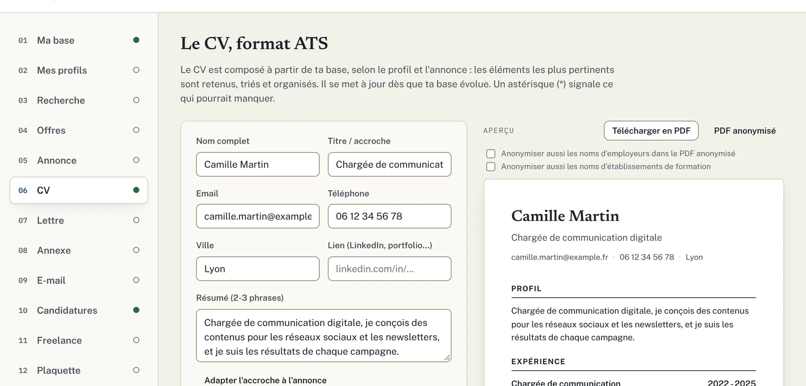
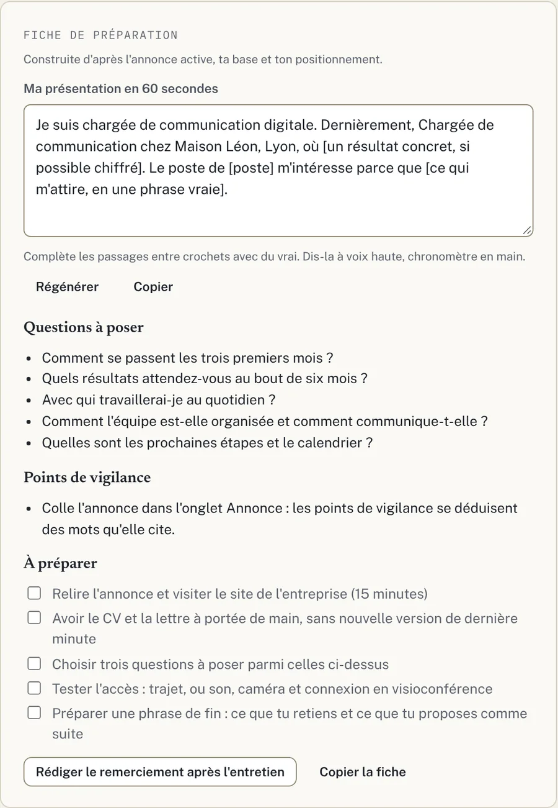
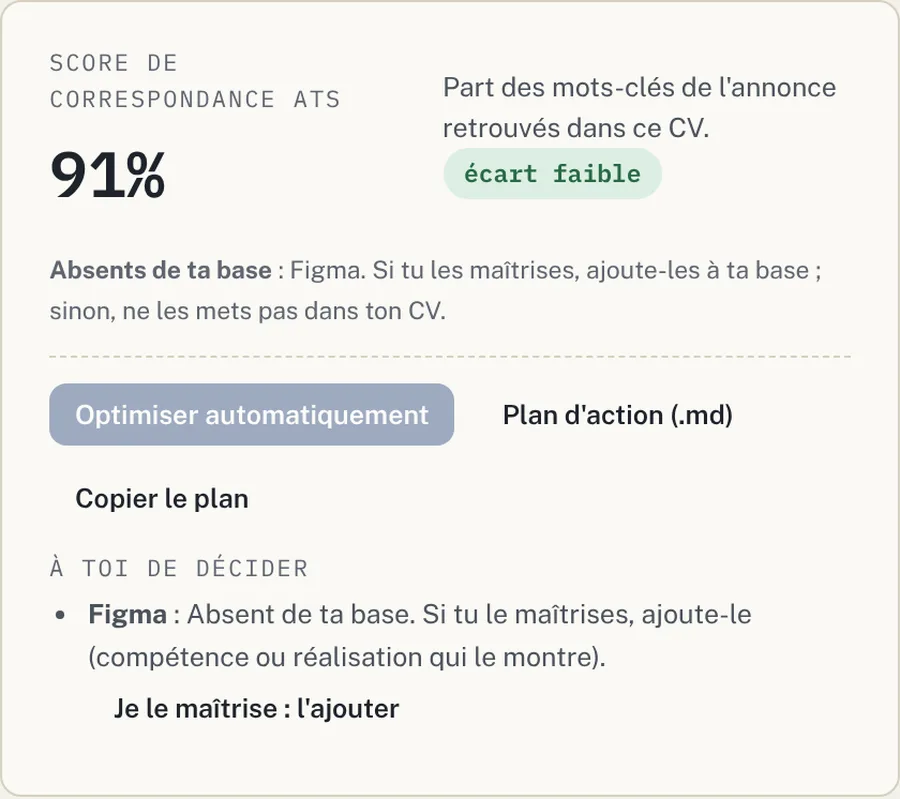
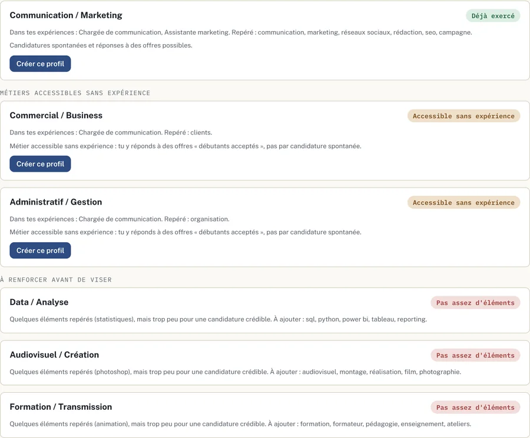
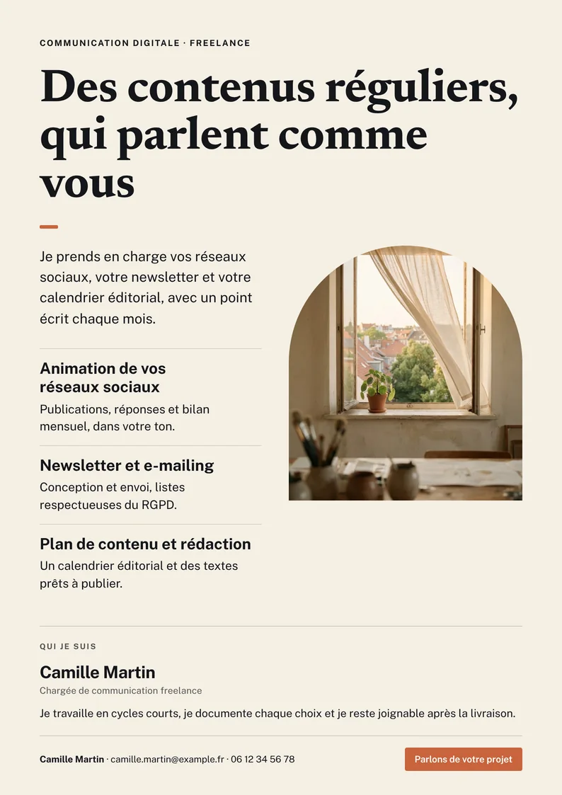
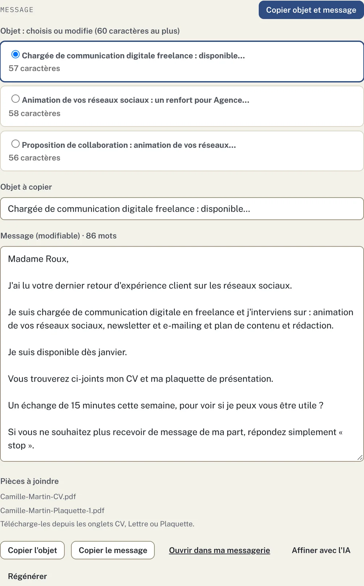

Une base, pas des fichiers
Tu importes tes CV une fois. L'atelier trie les expériences, les formations et les compétences, et fusionne les doublons.
Gratuit pour le moment
L'atelier garde ton parcours dans ton navigateur, compose un CV et une lettre pour chaque offre, puis note ce que tu dois relancer. Pour les étudiants, les personnes en recherche d'emploi, les salariés en transition et les freelances.
Gratuit pour le moment. Sans compte, sans carte bancaire. Tes données restent sur ton ordinateur.

Le point de départ
Cinq versions du même CV dans un dossier. Une lettre qui repart d'une page blanche. Et le lundi matin, une question : à qui avais-je écrit la semaine dernière ?
Tu importes tes CV une fois. L'atelier trie les expériences, les formations et les compétences, et fusionne les doublons.
Pour chaque offre, il retient les expériences les plus proches, ordonne ton CV et te dit ce qui manque.
Chaque candidature est notée automatiquement, avec une relance conseillée au bout de dix jours.
Comment ça marche
Colle un ou plusieurs CV. L'atelier reconnaît les rubriques, nettoie le texte et affiche une carte de ta base. Tu corriges ce qu'il a mal classé.
Un lien ou un texte. L'atelier repère les mots-clés, voit si l'offre vient d'une entreprise, d'un cabinet ou d'une ESN, et compose ton CV.
Lettre modifiable, score de correspondance, PDF au format A4, e-mail d'envoi prêt à coller. La candidature est enregistrée dans ton suivi.
Pour qui
Une même base, des outils qui changent selon ce que tu cherches.
Étudiants et alternants
Études, projets, stages, associations, certifications : tout compte. L'atelier les organise et te montre ce qu'il te reste à ajouter.
Gratuit pour le moment, sans compte.

Recherche d'emploi
Chaque annonce a ses mots. L'atelier compare l'offre à ta base, compose le CV qui s'en rapproche et te montre l'écart.
Gratuit pour le moment, sans compte.

Salariés en transition
Tu as des années d'expérience, mais pas dans le métier visé. L'atelier cherche dans ton parcours ce qui s'y rapporte et te dit ce qu'il manque.
Gratuit pour le moment, sans compte. Les mêmes outils que pour la recherche d'emploi.

Freelances et indépendants
L'atelier propose des offres d'après ton CV, les transforme en accroches et en plaquette, puis te montre lesquelles reçoivent des réponses.
Gratuit pour le moment, sans compte ni démarche.


Fonctionnalités
Importe un ou plusieurs CV. L'atelier fusionne les expériences identiques, classe les compétences et affiche une carte de ton parcours.
Les éléments les plus pertinents sont retenus et ordonnés. Tu coches, tu décoches, tu modifies le texte directement dans l'aperçu.
Le texte reprend tes réalisations et ta voix. Un contrôle de style signale les formules toutes faites. La réécriture par Claude est une option.
CV en deux pages au plus, lettre en une page. Une version anonymisée sans nom, coordonnées ni photo est disponible.
Chaque candidature est enregistrée, avec ses versions. Tu reviens à une version précédente en un clic et l'atelier signale les relances dues.
Aucune clé n'est exigée : l'assistant passe par ton compte Claude, par un copier-coller ou, en option, par ta propre clé d'API. Tu vois le message avant l'envoi et tu peux tout faire sans lui.
Confidentialité
Pour le moment, l'atelier fonctionne sans compte. Ton parcours est enregistré dans ton navigateur.
Les documents se composent dans ton navigateur. Seuls un lien d'annonce ou des critères de recherche d'entreprises passent par le site, jamais ton CV ni tes coordonnées.
Aucun outil de mesure d'audience. Les polices et les bibliothèques sont hébergées avec le site.
L'assistant passe par ton propre compte Claude (ou ta propre clé d'API, en option). Il retire ton nom, tes contacts et le nom de tes employeurs du message, et te le montre avant de l'envoyer.
Pense au bouton « Sauvegarder » : effacer les données du navigateur efface aussi ta base. Des comptes pour retrouver tes données sur plusieurs appareils arriveront plus tard.
Gratuit
Toutes les fonctions sont ouvertes, sans compte et sans carte bancaire. L'assistant d'écriture facultatif passe par ton propre compte Claude : personne ne paie la consommation des autres.
Questions fréquentes
Oui, pour le moment. Toutes les fonctions sont ouvertes, sans compte et sans carte bancaire. Aucun tarif n'est affiché ni prévu à cette date.
Dans ton navigateur, sur ton ordinateur. Aucun serveur ne garde ton CV. Le bouton « Sauvegarder » crée un fichier de secours que tu peux restaurer plus tard ou sur un autre ordinateur.
Effacer les données du navigateur efface aussi ta base : fais une sauvegarde de temps en temps.
Par défaut, la lettre est composée à partir de ta base, avec des règles d'écriture : elle reprend tes réalisations et ne contient aucun fait inventé. La réécriture par Claude est une option, qui passe par ton propre compte.
Le CV suit les bonnes pratiques : titres de rubriques standard, texte réel, pas de colonnes ni de tableaux. Le score de correspondance mesure la part des mots de l'annonce présents dans ton CV. Aucun outil ne peut garantir le résultat d'un logiciel précis.
L'atelier te dit ce qu'il manque, à côté du CV : une date, un résultat chiffré, une certification, une accroche. Il ne comble jamais le vide avec un texte inventé.
Personne d'autre que toi, et seulement si tu t'en sers. L'assistant est facultatif et passe par ton propre compte Claude, par un copier-coller ou, en option, par ta propre clé d'API : l'atelier n'appelle aucune IA à ses frais et ne te facture rien.
Oui. Sur petit écran, les onglets se regroupent et l'aperçu s'affiche à part des réglages. Pour composer un CV, un ordinateur reste plus confortable.
Les informations sur l'éditeur sont dans les mentions légales.
Importe ton CV, colle une annonce et regarde ce que l'atelier compose.
Gratuit pour le moment. Sans compte.